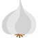

Лимон — вид цитрусовых фруктов, богат витамином С и В. Родина — Индия, Китай и тихоокеанские тропические острова.Лимон — вид цитрусовых фруктов, богат витамином
С и В. Родина — Индия, Китай и тихоокеанские тропические острова.
Репчатый лук — одна из важнейших овощных культур. Луковицы и листья используются как приправа в консервной промышленности, к салатам, винегретам, грибам, овощным и мясным
блюдам, а также как пряно-витаминная закуска и вкусовая добавка к супам, соусам, подливкам, фаршам. Чаще всего лук употребляется в сыром виде или поджаренным на сале или растительном масле до золотистого цвета. Сырой лук отлично
дополняет колбасные и мясные изделия, творог, сыры, хлеб с салом.
Благодаря наличию в апельсинах комплекса витаминов и других биологически активных веществ, эти цитрусовые рекомендуют для профилактики и лечения гиповитаминозов
Молоко является богатым источником некоторых витаминов и полезных веществ, и традиционно считалось полезным. Однако исследования (начиная с конца XX века) показали, что влияние
коровьего молока на здоровье человека спорно?. Считается, что молоко богато кальцием, необходимым для здорового роста костей и нормального функционирования нервной системы. Согласно проведённому в Гарварде исследованию, повышенное
потребление молока или иных пищевых источников кальция не снижает риск перелома костей у женщин в возрасте от 34 до 59 лет.
 В английском языке есть пословица «кто яблоко в день съедает, у доктора не бывает». Употребление яблок может снизить опасность заболевания раком кишечника
В английском языке есть пословица «кто яблоко в день съедает, у доктора не бывает». Употребление яблок может снизить опасность заболевания раком кишечника Соплодия ананаса настоящего — ценный продукт питания. Употребляется в пищу в сыром и консервированном виде, широко используется в кондитерской промышленности (конфеты,
джем, варенье). Благодаря комплексу биологически активных веществ ананас обладает полезными свойствами: стимулирует пищеварение, санирует кишечник, снижает вязкость крови. Вместе с тем следует учитывать, что ананас является острым
продуктом, употреблять его при заболеваниях желудка не рекомендуется. В листьях имеются многочисленные прочные волокна, отчего ананас используют и как прядильную культуру[8]. Применение соплодий: При нарушении пищеварения: для
повышения ферментативной активности желудочного сока во время еды рекомендуют выпить стакан ананасового сока или съесть свежий ломтик плода. Это особенно полезно при обильной еде, употреблении в пищу большого количества клетчатки,
мяса. Стакан ананасового сока может помочь бороться с тошнотой во время авиаперелета или путешествия по воде. При избыточном весе (ананас является малокалорийной едой, в 100 г плода содержится только 48 ккал). Высокое содержание
солей калия помогает избавиться от лишней жидкости, что способствует похудению. Десерт из ананаса усиливает переваривание жира и улучшает обмен веществ в организме. При тромбозах и отеках. При мозолях для удаления участков омозолелости.
Как косметическая маска при жирной коже лица
Соплодия ананаса настоящего — ценный продукт питания. Употребляется в пищу в сыром и консервированном виде, широко используется в кондитерской промышленности (конфеты,
джем, варенье). Благодаря комплексу биологически активных веществ ананас обладает полезными свойствами: стимулирует пищеварение, санирует кишечник, снижает вязкость крови. Вместе с тем следует учитывать, что ананас является острым
продуктом, употреблять его при заболеваниях желудка не рекомендуется. В листьях имеются многочисленные прочные волокна, отчего ананас используют и как прядильную культуру[8]. Применение соплодий: При нарушении пищеварения: для
повышения ферментативной активности желудочного сока во время еды рекомендуют выпить стакан ананасового сока или съесть свежий ломтик плода. Это особенно полезно при обильной еде, употреблении в пищу большого количества клетчатки,
мяса. Стакан ананасового сока может помочь бороться с тошнотой во время авиаперелета или путешествия по воде. При избыточном весе (ананас является малокалорийной едой, в 100 г плода содержится только 48 ккал). Высокое содержание
солей калия помогает избавиться от лишней жидкости, что способствует похудению. Десерт из ананаса усиливает переваривание жира и улучшает обмен веществ в организме. При тромбозах и отеках. При мозолях для удаления участков омозолелости.
Как косметическая маска при жирной коже лица YOUTUBE
YOUTUBE
 TWITTER
TWITTER
 TELEGRAM
TELEGRAM